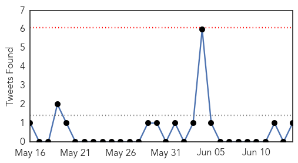
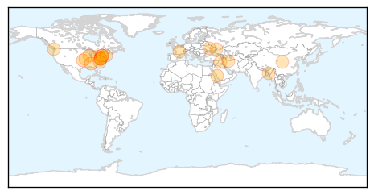
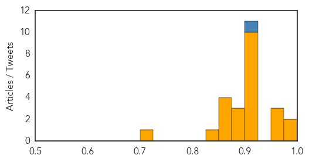
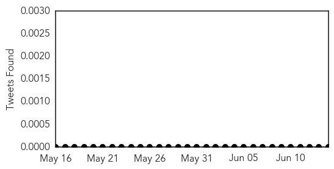

Unknown
30-Day Web Trend
0 alerts, 0 warnings

30-Day Twitter Trend
0 alerts, 0 warnings

Article Locations
Article Confidences
Top Articles:
- 0.997
- First MERS death in Algeria
- 0.987
- Local residents say ticks are overabundant this year
- 0.959
- Additional Birmingham Patient Tests Positive for Legionella
- 0.954
- Malaria death toll in Tripura rises to 21
- 0.950
- Legionnaires' case confirmed in Wilson County
- 0.917
- Chicago Tribune
- 0.917
- Chicago Tribune
- 0.917
- Chicago Tribune
- 0.917
- Chicago Tribune
- 0.917
- Chicago Tribune
- 0.917
- Chicago Tribune
- 0.917
- Chicago Tribune
- 0.917
- Chicago Tribune
- 0.917
- Chicago Tribune
- 0.917
- Chicago Tribune
- 0.899
- Virus threat to keep pigs from Big Butler Fair
- 0.893
- Lyme disease needs research
- 0.883
- Officials: 2 cases of new virus in Rhode Island
- 0.867
- Three health workers suspended in Tripura
- 0.866
- Ukraine promises "adequate response" over shot-down plane
- 0.866
- Forty-nine Ukrainian troops killed in plane shot down by rebels
- 0.862
- Lawyer calls for investigation into salmonella outbreak at Heartlands Hospital
- 0.833
- Big Data Help Battle Flu Outbreaks
- 0.722
- Concerned Over Mad Cow Disease, Missouri Slaughterhouse Recalls Over 4,000 Pounds Of Beef
Top Tweets:
- 0.908
- “The total number of cases is subject to change due to reclassification, retrospective investigation, consolidation of cases… 1/2 MERS
Chikungunya
30-Day Web Trend
9 alerts, 4 warnings

30-Day Twitter Trend
1 alerts, 0 warnings

Article Locations

Article Confidences

Top Articles:
- 0.999
- Mosquito-Borne Virus, Chikungunya, Spreads To Various States: Health Officials Warn For Summer Outbreak
- 0.998
- Mission workers, vacationers at risk for chikungunya
- 0.998
- Dengue-like chikungunya virus reported in El Salvador
- 0.997
- First case of chikungunya in Tennessee confirmed
- 0.997
- Rhode Island is the latest US state to record imported chikungunya cases
- 0.997
- First chikungunya case confirmed in Tennessee
- 0.995
- It’s Only a Matter of Time Before Chikungunya Hits the US
- 0.994
- First chikungunya case confirmed in Tennessee
- 0.990
- New Mosquito-Transmitted Virus Has No Known Cure or Treatment
- 0.988
- DHHS sees 1st case of rare, mosquito-borne virus
- 0.983
- America's Getting a New Mosquito-Borne Disease
- 0.974
- 2 Cases Of New Mosquito-Borne Virus In Rhode Island « CBS Boston
- 0.970
- Cases of mosquito-borne chikungunya virus appearing in US
- 0.970
- More chikungunya cases reported in U.S.
- 0.953
- Reduce mosquito breeding sites to avoid chikungunya, Ministry urges
- 0.873
- Key West is ready for chikungunya
Top Tweets:
-
No tweets found for Jun 14, 2014